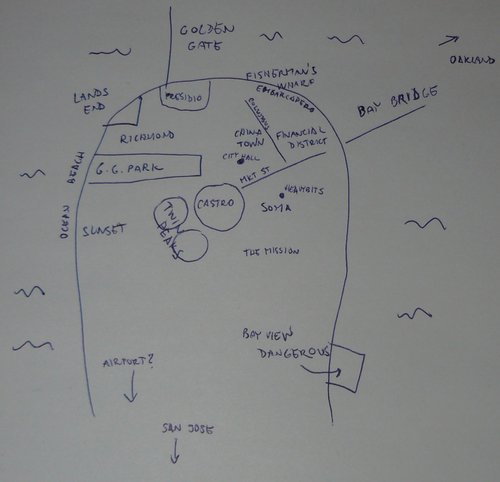

Oťukávání San Francisca
Tak jsem tady, v San Franciscu. Abychom to nezdržovali:
První týden jsem pracoval od nevidím do nevidím, teď už trochu začínám pokukovat i po něčem jiném, co bych tady mohl dělat, abych se nezbláznil. Moje mapa vypadá takto:

Chcete-li srovnání s realitou, prosím. Bydlím v Richmondu a pracuju v Heavybit Industries, což je v části nazývané zkráceně SoMa. Obrázek výše znázorňuje, co asi tak o SF momentálně vím a co tuším kde je - neznamená to ale, že jsem tam všude byl. Tohle vidím z okna v Richmondu:

Zatím jsem stihl plus mínus prozkoumat Golden Gate Park (ten jsem si dost oblíbil), pláž a kousek Richmondu. Když zrovna neprší, je tu pořád víceméně slunečno, ale větrno a pod dvacet stupňů. Vánoce tu tedy mohu očekávat mezi palmami, ale na plavky to zrovna moc není. Což moc nevadí - takové slunečné, průměrné počasí se mi vlastně docela líbí. Když budu dobrodružné povahy, vykoupat se v Pacifiku můžu i tak. Nechal jsem se tak trochu paralyzovat tím dlouhým pobytem a dá se říct, že nikam moc nechodím a nic nedělám a vůbec se nechovám turisticky. Našel jsem ale v parku medvídka mývala, takže se nenudím.

Kolegové mi udělali seznam věcí, co mám vidět, ale zatím jsem se do toho moc nepustil…


S kolegou jsme jednoho odpoledne došli z pláže na Lands End. Odtamtud jsme uviděli Golden Gate (průliv do San Francisco Bay) a slavný červený Golden Gate Bridge, který přes něj vede. To byl jeden “velký výlet”, který jsem uskutečnil.


Okolí práce není až tak zajímavé - SoMa a okolí Market St. je plné bezdomovců a tak a vlastně se mi tam ani moc nelíbí. Už se ale učím je “ignorovat” stejně jako místní. Je to tam dost jiné než u nás nebo ve Stockholmu nebo prostě kdekoliv, kde jsem předtím byl.


Další “velký výlet”, kterého jsem se účastnil, byl výlet autem na Mt. Diablo kus za Oaklandem. Byly tam srandovní pískovce, po kterých se dalo lozit a byla tam fajn příroda, ale byl to výlet na rodinný piknik, takže žádný hardcore trek.


Po výletě jsme tím autem zajeli ještě na Twin Peaks, odkud je výhled na celé SF:

Je to místo, kam jsem chtěl jednou po vzoru místních vzít Zuzku na rande. Akorát že jsem jí teď zkazil překvapení, protože to tu samozřejmě čte. Tak Zuzko, se s tim smiř, takhle nějak to bude vypadat. Akorát v reálu je to o dost míň rozmazaný a budu ti při tom prstem ukazovat kde co je a budu hrát hrozně chytrýho. Ostatně jako vždycky, když je někde nějaký výhled.
No a víc fotek zatím nemám! Už mám jenom fotku toho, jak jsem pro všechny vařil těstoviny se špenátem.

Je to americký sporák, takže je to VELKÝ sporák. No a abych si udržel nějakou tradici, nakonec přikládám pár kusých postřehů:
- Je tu příroda a tráva. Docela rozdíl od Las Vegas.
- Je to tu fakt takové “evropštější”, jak mě na to v Las Vegas připravovali. Ale spíš bych řekl, že je to tu prostě unikátní. Je to tady San Francisco.
- Pravoúhlé ulice mají zajímavé dopady na uspořádání města. Orientace funguje trochu jinak, lidi měří vzdálenosti na “bloky”, spíš než názvy ulic + číslo používají názvy křižovatek (Market/9th, apod.).
- Jezdí tu trolejbusy. Jo a všechny autobusy a trolejbusy mají vepředu před čumákem držáky na kola. Pecka!
- MHD je tu o DOST vymakanější než ve Vegas. Ou jé!
- K anglickým a španělským hláškám v autobusech přibylo čínské hlášení. Je tu velká čínská diaspora a největší China Town, kde jsem ale ještě nebyl. Pro milovníky béčkových filmů (Zuzi? :-D ) doporučuji Big Trouble in Little China.
- Zastávka na znamení se dělá taháním za šňůru. Otevírání dveří je na fotobuňku - šlápnete-li na poslední schůdek, otevřou se. Když na něm ale budete stát v plném autobuse, nezavřou se a autobus neodjede. Po deseti minutách stání na zastávce vám to ale někdo z cestujících rád nevzrušeně (!) vysvětlí.
- Nevím jak jinde, ale Richmondu je hodně Rusů. Nevím proč.
- Trvalo mi chvíli pochopit, že Civic Center, Market St. a SoMa jsou tak trochu vyloučené čtvrti, které momentálně podléhají “gentrifikaci”. Myslel jsem, že to je prostě centrum města a bude to tak všude. “Tak” znamená hromady bezďáků, smrdící ulice, atd. a vedle toho mrakodrap nebo hipster kanceláře Heroku. Doufám, že jinde to bude… jiný.
- Potraviny jsou tu neregulované. V normálním obchodě (ve kterém jsem nikdy nebyl) mají jen obrovská balení nějakých strašlivých nadesignovaných shitů plných dochucovadel, éček, atd. Na druhém konci škály jsou hipster obchody, kde je všechno “organic” a bez přídavků atd. U nás by to byly asi prostě “bio” supermarkety. Mezi těmito extrémy tu není nic. Zlatá byrokratická Evropa.
- Ve srovnání s Las Vegas už jsem tu neviděl ani tolik tlustých lidí, ani tolik výstřihů. Naopak v parku je dost lidí, kteří všelijak sportují a je tu i celkem dost cyklistů.
- Když někdy vidím ten americký deregulovaný kapitalismus v praxi, říkám si, že ta naše přeregulovaná a socialistická Evropa je vlastně hrozně fajn :-D Jestli u nás je každý “střední třída”, akorát někdo chudší střední třída a někdo bohatší, tak tady jste buď bezďák, nebo hispánec/černoch posluhující jako číšník/uklízeč, nebo hipster white guy, který sedí v kanclíku a ťuká do Macu a usrkává tu nejkvalitnější kávu na světě. Postindustriální společnost. Jestli jste programátor a chcete si vyzkoušet, jaké to je být privilegovaná “high class society”, v SoMa k tomu rozhodně přičichnete.
- Když vám chce američan říct, že se mu nelíbíte, řekne “mám tě moc rád, ale tady ta drobnost není úplně ono”. Kolem všeho hrozně moc bullshitují. My jsme upřímnější a přímočařejší. Zase se spolu vůbec nebojí bavit jen tak na ulici. Viděl jsem úžasné situace, ke kterým by u nás nikdy nedošlo, protože lidi se u nás tak vstřícně k cizím kolemjdoucím apod. prostě nechovají.
- Lidi jsou tady tak nějak víc pozitivní. Vaše problémy nikoho nezajímají, neotravujte s nimi cizím jejich životy. Máte se fajn a hotovo! A usmívejte se. Nevím, jestli je to dobře, nebo špatně. Někdy dobře, někdy špatně.
- Pilsner (typ piva) se dá sehnat v pohodě, ale nechutná mi tady. IPA je tu všude, ale zatím jsem se k ní úplně nepropil - některé jsou chutnější, některé jsou fakt hnusné. No, mám ještě měsíc.
- Kalifornie je vinařská oblast. Měl jsem červené víno z Napy a to bylo super.
- Z “ajtý” zajímavostí jsem viděl zatím nic moc neviděl… ne že bych to vyhledával… byl jsem na nějakém Ruby eventu v centrále Heroku, kde byl Matz a další Ruby bohové, to bylo fajn. A viděl jsem PagerDuty kanceláře. Všechno stejná hipster buržoazní bublina uprostřed bezďáků, stejně jako ty naše Heavybit Industries. Ale vevnitř pěkný, to jako jo.
Konec hlášení! Zítra je Thanksgiving, tak třeba bude krocan.